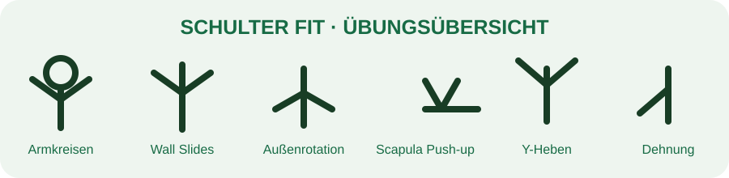

← TrainingsbibliothekSchulter Fit
12–15 Min · Mobilität & Stabilität

1. Armkreisen · 10–12 je Richtung
2. Wall Slides · 10–12 Wdh.
3. Außenrotation · 12–15 Wdh.
4. Scapula Push-ups · 10–12 Wdh.
5. Y-Heben · 10–12 Wdh.
6. Brust-/Schulterdehnung · 30 s je Seite